워록2 메버릭

워록1의 후속작으로, 대규모 전장 모드 Warfare와 전술 모드 TacticalOps 두 가지 플레이 경험을 제공하는 FPS입니다. 사내 1인 UI 디자이너로서 로그인·런처부터 로비, 인벤토리·퍽·차량 커스터마이징, 전투 중 HUD·맵, 퀘스트·보상, 탑승 기종별 계기판, Steam 스토어 마케팅 목업까지 — 유저가 마주치는 거의 모든 화면을 설계했습니다.
UI Design Lead로 게임 전체 UX 사용성을 개선하고, Unreal Material·애니메이션을 활용한 UI 연출을 주도했습니다. 와이어프레임 단계부터 AS-IS/TO-BE 비교를 통한 반복 개선, 최종 마케팅 자산까지 디자인 전 과정(A-Z)을 담당했습니다.
🏆 튀르키예 ‘바이트사’ 투자유치
Steam 페이지 →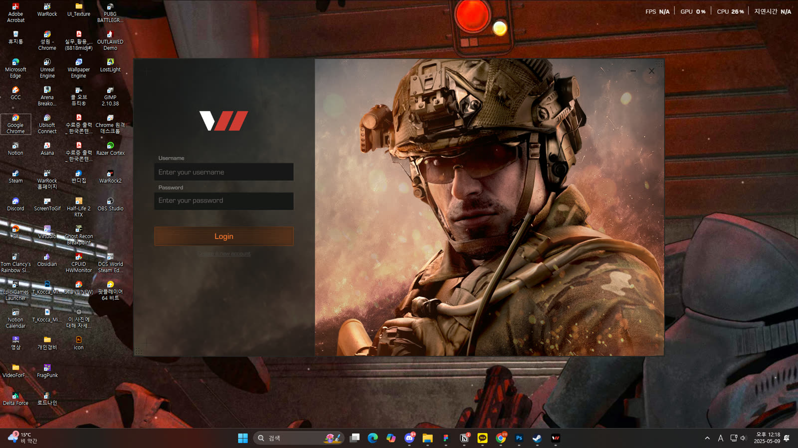
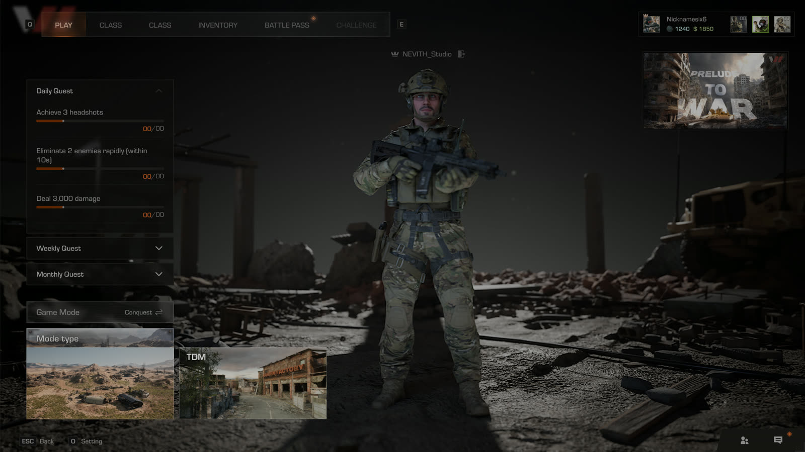
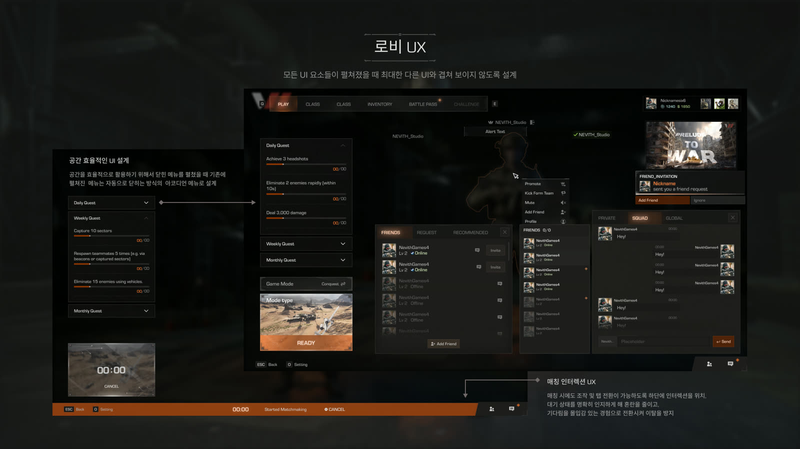
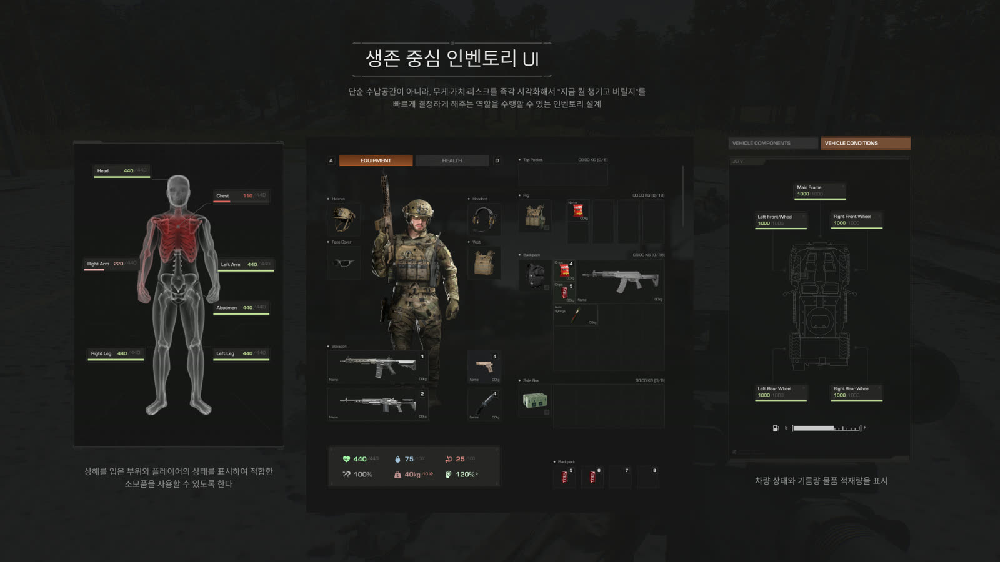
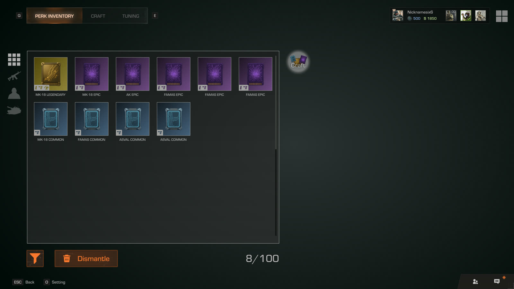
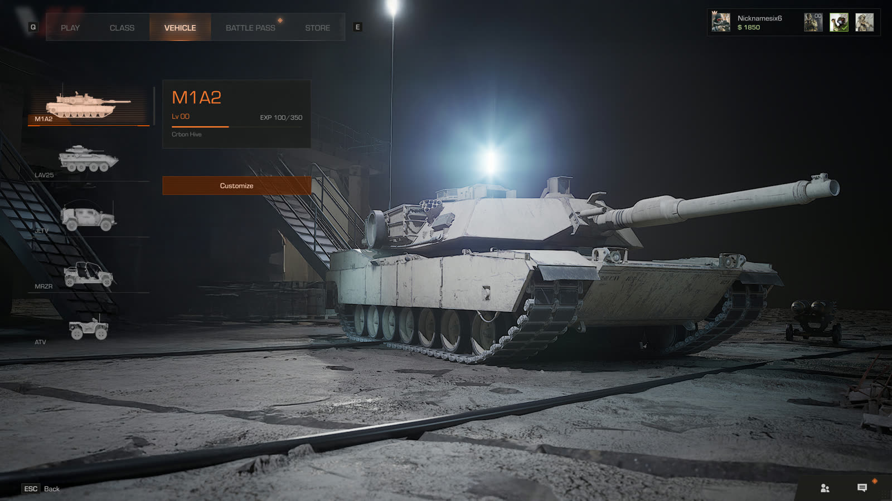
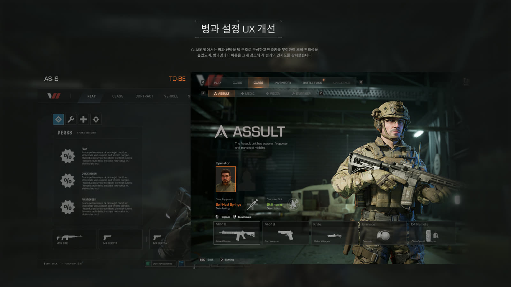

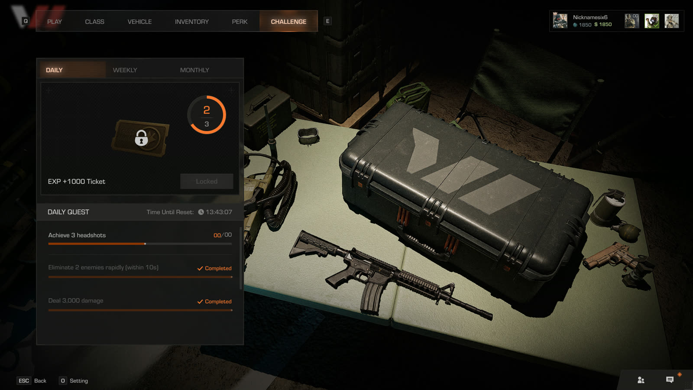

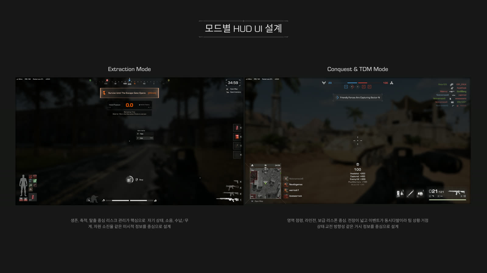
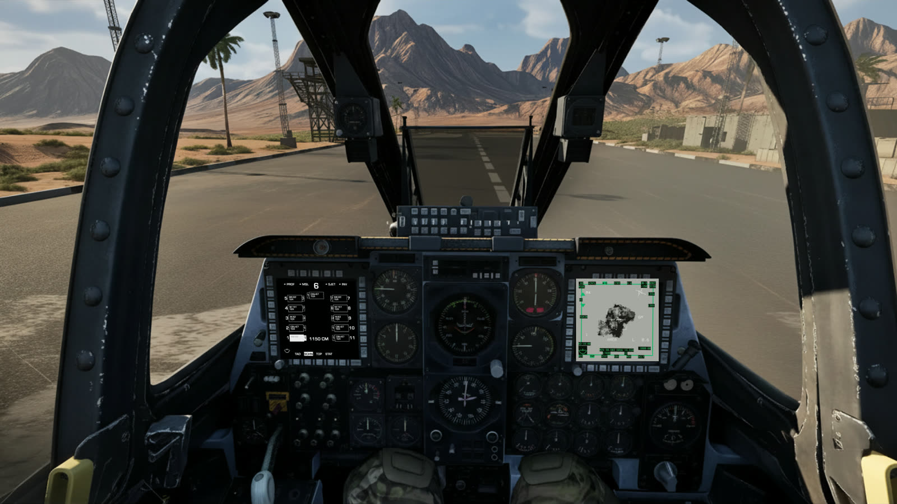
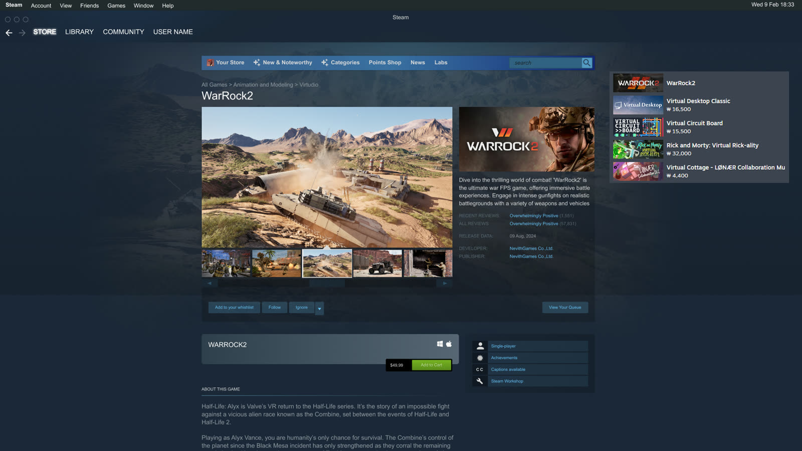